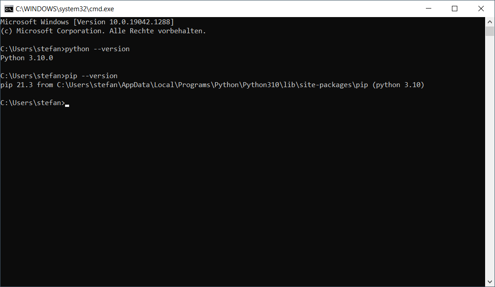

Programmieren für alle!
Einführung in die Programmierung und algorithmisches Denken mit Python.
Inhaltsverzeichnis
- 1. Einleitung
- 2. Erste Schritte
- 3. Datenstrukturen
- 4. Kontrollstrukturen
- 5. Funktionen
- 6. Mit Dateien arbeiten
- 7. Grundlagen der Objektorientierung
- 8. Code debuggen und testen
- 9. Lösungen zu den Aufgaben
- 10. Weiterführende Literatur

1. Einleitung
1.1. Ziel und Aufbau des Kurses
Dies ist ein Kurs für Programmieranfänger*innen ohne Vorkenntnisse. Genau aus diesem Grund habe ich auch die Programmiersprache Python gewählt. Python ist durch seine Schlichtheit perfekt geeignet, die wichtigsten Programmierparadigmen Einsteigern zu vermitteln. Es ist aber gleichzeitig so komplex, erweiterbar und verbreitet, dass man damit (fast) alles programmieren kann und man somit ein mächtiges Werkzeug in Händen hält, das man viele (Programmier-)Jahre später immer noch brauchen kann und - da bin ich mir sicher - lange nicht ausgelernt hat.
Sie können Python unter anderem erwenden, um:
- Ihren administrativen Alltag am Computer zu erleichtern und viele Aufgaben zu automatisieren,
- Web- und Desktopanwendungen zu entwickeln,
- im Bereich Data Science, Maschinelles Lernen, KI und Spracherkennung zu arbeiten,
- um Erweiterungen für viele Programme, wie Cinema 4D, Paint Shop Pro oder GIMP zu schreiben,
- oder um ihren RaspBerry Pi zu steuern.
- Selbst die Programmierung aufwändigerer GUI Programme ist damit zu bewerkstelligen.
Neben dem Programmieren mit Python soll der Blick in diesem Kurs aber auch auf das Programmieren „an sich“ gerichtet sein. Was heißt Programmieren eigentlich? Was geschieht da am Computer? Welche Konzepte tauchen unabhängig von der tatsächlich verwendeten Prorammiersprache immer wieder auf? Wie kann man von Anfang an einen guten Programmierstil erlernen? Und welche Fallstricke tauchen immer wieder auf? Kurzum, ich möchte Ihnen zeigen, wie Sie von Anfang an „weniger schlecht programmieren“, wie auch ein Titel des sehr guten Buches von Kathrin Passig und Johannes Jander heißt.
1.2. Python - ein kurzer Überblick
Viele Studien und Nutzerbefragungen der letzten Jahre zeigen, dass Python zu den top Programmiersprachen gehört, die erstens tatsächlich im Berufsalltag verwendet werden, die zweitens ganz weit vorne auf der Wunschliste vieler Programmier*innen steht und drittens dabei tatsächlich auch noch Spaß machen soll. Auch auf dem berühmten TIOBE Index ist Python seit gut 5 Jahren unter den ersten Plätzen zu finden. Das bedeutet, dass Python nun auch in der Industrie angekommen ist.

Abbildung 1: Python ist auf Platz 4 der am häufigsten verwendeten Programmiersprachen im Berufsalltag von Programmier*innen weltweit. (Quelle: https://insights.stackoverflow.com/survey/2020#technology-programming-scripting-and-markup-languages-professional-developers)

Abbildung 2: Python ist aber auch ganz weit vorne, wenn es um die Frage geht, was Programmierer:innen unbedingt noch lernen wollen. (Quelle: https://insights.stackoverflow.com/survey/2020#technology-most-loved-dreaded-and-wanted-languages-wanted)

Abbildung 3: Und bei alledem scheint Python auch noch richtig Spaß zu machen. (Quelle: siehe Abbildung oben.)

Abbildung 4: Neben C und Java ist Python nun unter den Top 3 Programmiersprachen, noch vor C++.
Wie konnte es zu diesem Aufstieg in den letzten Jahren kommen?
1.2.1. Die Anfänge
Die Sprache Python erblickte laut Wikipedia am 20. Februar 1991 durch seinen niederländischen Schöpfer Guido van Rossum am Centrum voor Wiskunde das Licht der Welt. Ursprünglich war es als Skriptsprache für das Betriebssystem Amoeba gedacht. Van Rossum hatte zuvor schon an der Programmiersprache ABC mitgewirtk, die so einfach sein sollte, dass sie von jedem interessierten Laien benutzt werden konnte. Diese Erfahrungen konnte er für die Entwicklung von Python nutzen. Python sollte so einfach wie möglich zu erlernen aber gleichzeitig so mächtig wie nötig sein, um sie wirklich in so gut wie allen Projekten einzusetzen. Weiter unten kann die „Philosophie“ Pythons im Zen of Python nachlesen.
Auf Youtube findet sich ein kurzes Interview mit Guido van Rossum zur Entstehung von Python.
1.2.2. Python heute
Mittlerweile sind wir bei der dritten Version (also 3.x) von Python angekommen. Anfang der 2000er führte Pythons Ruf, sehr einfach aber dennoch mächtig zu sein, dass es an vielen Universitäten für Einsteigerkurse ins Programmieren verwendet wurde. Doch der eigentliche Durchbruch begann ca. 2015, als Python vor allem im Bereich der Künstlicen Intelligenz und dort beim sog. Deep Learning mit Neuronalen Netzen. Python bekam den Ruf die Sprache für Data Science zu sein und mit dem Aufstieg der Data Science Welle, stieg auch Python mit auf.
An dieser Historie lässt sich gut ablesen, was Python von Anfang an ausmachte. Es ist nach wie vor relativ einfach zu lernen, aber so mächtig, dass es sich in den wichtigsten Gebieten der Informatik und der Industrie mühelos einsetzen lässt. Und die Arbeit an Python hört nicht auf. Sowohl die Einfachheit wird weiter verbessert. So hat man in der Version 3.10 die Fehlerausgabe stark verbessert und damit Anfänger*innen noch zugänglicher gemacht. Aber auch an der Mächtigkeit wird weiterhin geschraubt. So gibt es seit Python 3.8 Assignment Operationen und seit 3.10 ein mächtiges Pattern Matching. Doch Python soll vor allem auch schneller werden und damit konkurrenzfähig bleiben - dafür setzt sogar Guido van Rossum persönlich ein.
Python hat also nicht nur eine grandiose Gegenwart sondern es steht ihm auch noch eine fruchtbare und lange Zukunft voraus.
1.3. Installation
Es gibt leider nicht die eine Art Python zu installieren. Man mag glauben, es reiche, auf https://python.org zu gehen, das Installationsskript für das eigene Betriebssystem herunterzuladen und zu installieren. Das ist zwar möglich, aber oft sind danach noch ein paar Anpassungen - je nach System - nötig. Ich versuche daher, die einfachste Methode für die Systeme Windows (ab Version 10), MacOs (ab Mojave) und Linux (verschiedenste Derivate) zu beschreiben.
1.3.1. Windows
Unter Windows 10/11 ist allerdings tatsächlich am leichtesten, Python über das auf https://python.org bereitgestellte Installationsprogramm zu installieren.
Gehen Sie also auf die Python Webseite und gehen mit der Maus auf Downloads. Es sollte sich eine Ansicht öffnen, bei der Sie einen Button „Download for Windows - Python 3.x.x“ sehen. Klicken Sie auf diesen Button und das Installationsprogramm wird heruntergeladen.

Starten Sie das Installationsprogramm. Setzen Sie den Haken unbedingt bei „Add Python 3.X to Path“. Klicken Sie dann auf „Install Now“ und warten, bis die Installation beendet ist.
Nach der Installation können Sie über das Windows Startmenü Python starten. Es öffnet sich dann eine Konsole, mit der Sie Ihren ersten Python Code eingeben und ausführen können.
Anschließend können Sie noch testen, ob in Windows auch die Pfade
zu den Python Programmen richtig gesetzt wurden. Öfnnen Sie dazu
eine Eingabeaufforderung (drücken Sie die Windowstaste + „R“ und
geben in das sich öffnende Fenster „cmd“ ein. Klicken Sie dann auf
„ok“.) und geben zuerst ein python --version und danach pip
--version. In beiden Fällen sollte kein Fehler kommen und die
Ausgabe ähnlich wie die in der nächsten Abbildung sein.

1.3.2. Mac OSX
Python ist zwar unter Mac OS schon vorinstalliert, allerdings in
der nicht mehr brauchbaren Version 2.7. Öffnen Sie also ein
Terminal (drücken Sie Command + Leertaste und geben „Terminal“
ein) und geben dort python ein, so startet sich Python mit einer
Warnung, dass man doch bitte python3 ausführen solle. Möchte man
dies tun, so will Mac OS die Apple Developer Tools herunterladen,
die auch Python 3 enthalten, aber eventuell nicht die aktuellste
Version. Auch ein Update auf eine neuere Python Version wird so
schwierig.
Am besten fährt man unter Mac OSX ähnlich wie bei Windows, dass man sich den offiziellen Installer von der Python Webseite herunterlädt.
Gehen Sie dazu auf obige Seite und gehen mit der Maus auf den Menüpunkt Downloads. Normalerweise, sollte ihr Brwoser der Seite mitteilen, dass Sie unter Mac OS unterwegs sind und einen Button mit „Download for macOS“ anzeigen. Klicken Sie auf den Button und laden das Installationsprogramm herunter.

Doppelklicken Sie die Datei python-3.X-macos11.pkg in Ihrem
Downloadordner und folgen Sie den Installationsschritten.
Nach der Installation finden Sie Python installiert unter
Macintosh HD/Programme/Python 3.X.
Testen der Installation
Öffnen Sie das Mac Programm Terminal entweder aus Ihrem Programmordner
oder über die Tastenkombination Command-Leertaste. Geben Sie dort dann
den Befehl python3 --version ein. Wenn keine Fehlermeldung kommt und
die korrekte aktuelle Python Version 3.X (Stand 04.01.2021 ist es
Version 3.10.1) angezeigt wird, wurde Pytho korrekt installiert.
1.3.3. Linux
Unter den meisten gängigen und aktuellen Linux Distributionen
(Ubuntu, OpenSUSE, Fedora, Arch Linux, etc.) ist Python 3 schon
installiert. Sie können das in Ihrer Konsole mit dem Befehl
python3 --version testen. Möchten Sie allerdings die aktuellste
Python Version verwenden, müssen Sie entweder eine Fremdquelle in
Ihre Paketverwaltung einbinden, oder Python direkt aus dem
Sourcecode kompilieren.
Installtion aus einer Fremdquelle (am Bsp. Ubuntu)
Für das Hinzufügen einer Fremdquelle in einer anderen Distribution ausser Ubuntu, befragen Sie bitte das „allmächtige“ Google: „install python 3.10 on xxx“.
Aktualisieren Sie zuerst alle Programme:
sudo apt update && sudo apt upgrade -y
Installieren Sie nun die nötigen Abhängigkeiten für das Hinzufügen von Fremdquellen im System:
sudo apt install software-properties-common -y
Fügen Sie nun die Fremdquelle deadsnakes hinzu, die immer die aktuellen Python Version fertig kompiliert für Ubuntu vorhält.
Achtung! Das Hinzufügen von Fremdquellen kann eine Sicherheitslücke für Ihr System bedeuten!
sudo add-apt-repository ppa:deadsnakes/ppa
Installieren Sie dann die aktuellste Version (Stand 04.01.2021: Python 3.10):
sudo apt install python3.10
Testen Sie dann wie oben die installierte Version mit dem Befehl
python3.10 --version.
Installation aus dem Sourcecode
Wenn Sie Python aus den Quellen installieren, haben Sie den groẞen Vorteil, dass die Installation auf ihr System optimiert ist. Sie bekommen aber keine automatischen Updates, auch keine Sicherheit-Updates, sondern müssen sich ab dann selbst darum kümmern, nach der Veröffentlichung einer neuen Python Version diese dann wieder manuell zu installieren.
Auch hier beschreibe ich den Prozess aus Sicht von Ubuntu. Bei einer anderen Linux Distribution fragen Sie bitte ebenfalls Google.
AKtualisieren Sie zuerst Ihr System und installieren dann die für das Kompilieren nötigen Abhängigkeiten:
sudo apt update sudo apt install build-essential zlib1g-dev libncurses5-dev libgdbm-dev libnss3-dev libssl-dev libreadline-dev libffi-dev libsqlite3-dev wget
Laden Sie dann das aktuelle Quellpaket per wget herunter. Den
Link auf die aktuellste Version finden Sie übrigens immer unter
diesem Link: https://www.python.org/downloads/source/
wget https://www.python.org/ftp/python/3.10.0/Python-3.10.0.tgz
Entpacken Sie das heruntergeladen Archiv und wechseln Sie in das entstehende Verzeichnis.
tar -xf Python-3.*.tgz cd Python-3.*
Starten Sie die Konfiguration:
./configure --enable-optimizations
Prüfen Sie mit dem Programm nproc, wieviele Kerne Ihre CPU hat.
nproc
Geben Sie Zahl, die nproc ausgibt im folgenden Befehl ein. Haben Sie also eine CPU mit vier Kernen, so geben Sie im nachfolgenden Befehl 4 ein.
make -j 4
Anschlieẞend installieren Sie das kompilierte Programm:
sudo make altinstall
Testen Sie zuletzt die Installation über den Befehl python3.10 --version.
1.4. Become a Pythonista! das Python Zen
Starten Sie die Python Eingabeaufforderung und geben Sie folgendes ein.
import this
Danach sollte folgende Liste erscheinen:
The Zen of Python, by Tim Peters Beautiful is better than ugly. Explicit is better than implicit. Simple is better than complex. Complex is better than complicated. Flat is better than nested. Sparse is better than dense. Readability counts. Special cases aren't special enough to break the rules. Although practicality beats purity. Errors should never pass silently. Unless explicitly silenced. In the face of ambiguity, refuse the temptation to guess. There should be one-- and preferably only one --obvious way to do it. Although that way may not be obvious at first unless you're Dutch. Now is better than never. Although never is often better than *right* now. If the implementation is hard to explain, it's a bad idea. If the implementation is easy to explain, it may be a good idea. Namespaces are one honking great idea -- let's do more of those!
1.5. Hilfe und Training.
1.5.1. Wo bekomme ich Hilfe.
1.5.2. Training, Training, Training!
Programmieren lernen geschieht, wie auch beim Sprachenlernen, durch viele Wiederholungen. Repetitive Übungen helfen, die Sprache metaphorisch „in die Finger zu bekommen“. Muscle memory ist eine wichtige, oft unbedachte Komponente erfolgreichen Programmierens. Repititive Aufgaben sollten aber auch Spaß machen. Wer erinnert sich nicht an so manchen Sprachunterricht in der Schule mit sturem Auswendiglernen von Vokabeln. Und seien wir ehrlich: so etwas würde doch beim Programmieren gar nicht funktionieren, einfach bestimmte Funktionsnamen, Konstrukte etc. auswendig zu lernen. Zum guten Programmieren gehört noch einen weiterer Skill, der so würden manche sagen, vielleicht sogar deckungsgleich ist mit der Tätigkeit des Programmierens an sich. Es ist der des Problemlösens, oder auf englisch noch viel treffender beschrieben als algorithmic thinking; also das „Denken in Algorithmen“.
Gute Webseiten und Bücher zum Programmieren Trainieren
- [Buch:] Lo Iacono et.al.: Programmieren Traninieren mit über 120 Workouts in Java und Python
- [Webseite:] Advent of Code Seit 2015 gibt Eric Wastl einen Adventskalender heraus mit 24 Problemen, die programmatisch gelöst werden sollen. Die Sprache, in der ein Problem gelöst wird ist völlig frei wählbar.
2. Erste Schritte
2.1. Die REPL
2.2. Mathematische Operationen
2.3. Logische Operatoren
2.4. Variablen
2.5. Datentypen
2.5.1. Zahlen
2.5.2. Strings
2.5.3. Booleans
2.5.4. Datum und Zeit
2.5.5. Type Casting
2.5.6. Type Conversions
2.6. Python erweitern
2.6.1. Das Import Statement
2.6.2. Paketmanager
PIP und PyPi
Conda
2.7. Python Code ausführen
2.7.1. Python Skripte
2.7.2. Jupyter Notebooks
2.8. Editoren
2.9. Aufgaben
3. Datenstrukturen
3.1. Listen
3.2. Tupel
def sum_and_product(x, y): return x + y, x * y sp = sum_and_product(3, 5) print(sp) s, p = sum_and_product(3, 5) print(s, p)
3.3. Dictionaries
3.4. Sets
3.5. Der in Operator
3.6. Collections sortieren
3.7. Become a Pythonista!
3.7.1. Slicing
3.7.2. List Comprehensions
3.7.3. Verzweigungen vermeiden
Einer Variablen bool wird der Wert False oder True zugeordnet. Je nachdem soll dann der String „Nein!“ oder „Ja!“ ausgegeben werden.
Mit einer if Verzweigung würde der Code in etwas so aussehen:
if bool: print("Ja!") else: print("Nein!")
Noch kürzer könnte das auch so mit Hilfe des „ugly“ ternären Operators geschrieben werden:
print("Ja!" if bool else "Nein!")
Wir können aber auch die Tatsache ausnutzen, dass Python die Booleans True und False immer auch als Integerwerte \(0\) und \(1\) interpretiert.
Erinnern wir uns: auf Listenelemente können wir mit Hilfe von eckigen Klammern und dem Index zugreifen, also z.B. list[0] erstes Element und list[1] zweites Element. Somit können wir auch folgenden Code schreiben, ohne eine if Verzweigung zu benutzen:
print(["Nein!", "Ja!"][bool])
Wir haben also eine Liste mit den zwei String Elementen „Nein!“ und „Ja!“ und greifen auf dessen Elemente über den Index zu. Ist bool gleich False, konvertiert Python diesen Boolean auf den Interger \(0\). Es wird somit auf den Index \(0\) und damit auf das erste Element „Nein!“ zugegriffen. Genau das, was wir haben wollten. Ist bool allerdings True so konvertiert der Interpreter zu \(1\). Wir greifen damit auf das zweite Element zu; also auf „Ja!“. Et voilá: es funktioniert auch ohne Schleife.
Es gäbe aber auch noch eine weitere Variante mit Hilfe eines Dictionaries:
print({True: "Ja!", False: "Nein!"}.get(bool))
Bei diesem Beispiel verhält es sich ähnlich wie oben mit der Liste. Allerdings wird hier über die Variable bool direkt auf den Key des Dictonaries zugegriffen.
Ich denke, dass gerade Beispiele 2 (ternärer Operator) und 3 (Dictonary) echt pythonésque Programmierweisen darstellen. Ob sie aber dem Python Zen für gut lesbaren Code darstellen, überlasse ich den Überlegungen des Lesers.
3.7.4. Benutze ein Dict als Switch-Statement
3.8. Aufgaben
3.8.1. Ausschuss zählen
Am Ende einer Fließbandproduktion für Rechnerchips werden die Ausschüße des Produktionstages gezählt. Die Zählung wird in einer Liste gespeichert. Immer wenn ein Chip verworfen wird, wird der Boolean True in die Liste geschrieben, wenn der Chip aber durchgelassen wird, dann wird ein False gespeichert. Die Liste mit dem Ausschuss der letzten Stunde könnte z.B. wie folgt aussehen:
ausschuss = [False, False, False, True, False, False, False, False, True, True, False, False, False, False, True, False, False, False, True]
Geben Sie aus, wie viel Ausschuss es gab. Zählen Sie also die True Werte in der Liste ausschuss.
4. Kontrollstrukturen
4.1. Die while Schleife
i = 0 while i < 3: print(i) i += 1
0 1 2
Was ist passiert?
Die while Schleife führt eine Anweisung so lange
aus, so lange eine logische Bedingung wahr ergibt.
4.2. Die for Schleife
4.3. if Verzweigungen
4.4. Become a Pythonista!
4.5. Aufgaben
4.5.1. Listen Differenzen
Gegeben sind zwei Listen A und B. Bilden Sie die Differenz A minus B und geben diese als Liste zurück.
Beispiele:
Sei A [1, 2, 2] und B [2] dann soll die Liste [1]
ausgegeben werden.
Sei A = [2, 3, 4] und B [] dann soll die Liste [2, 3, 4]
ausgegeben werden.
Sei A [3, 8, 1, 8, 9] und B [1, 8] dann soll die Liste [3,
9] zurückgegeben werden.
4.5.2. Pangramme
Ein Pangramm ist ein Satz, der alle Buchstaben des Alphabets beinhaltet. Schreiben Sie ein kleiner Programm, das prüft, ob in einem Satz alle Buchstaben des Alphabets enthalten sind. Groß-, Kleinschreibung soll keine Rolle spielen, genauso wenig wie Interpunktion. Der Einfachheit halber, gehen wir vom englischen Alphabet aus, das im ASCII Standard definiert ist und somit die Buchstaben „abcdefghijklmnopqrstuvwxyz“ umfasst. Ein Beispiel für ein Pangram ist der Satz: „The quick brown fox jumps over the lazy dog“.
Schauen Sie, ob Ihnen die offizielle „String“ Klasse weiterhilft
(import string). Mehr zu dieser Klasse finden Sie auf der Webseite der Python Foundation.
4.5.3. BMI Klassifikation
Der sog. Body-Mass-Index, kurz BMI, berechnet sich durch folgende Formel:
\[bmi = weight / height^2 \]
Schreiben Sie ein kleines Programm, das zwei Zahlen (float) als
Eingabe entgegen nimmt - eine Zahl für das Gewicht in kg; eine
Zahl für die Größe in m. Die Eingabe darf nicht negativ oder null
sein! Dann soll entschieden werden, wie der BMI klassifiziert
wird. Folgende Klassifikationen gibt es:
- Untergewicht (\(BMI < 20\))
- Normalgewicht (\(20 < BMI < 25\))
- Übergewicht (\(25 < BMI < 30\))
- Adipositas (\(BMI > 40\))
Berechnen Sie den BMI und geben Sie die Klassifikation mit einem
print() Befehl aus.
4.5.4. BMI Klassifikation - die pythonésque Art
Sehr wahrscheinlich haben Sie obige Aufgabe mit Hilfe einer if-elif-else Kontrollstruktur gelöst. Sehen Sie sich folgenden Code an und überlegen Sie, weshalb dieser auch zu einem richtigen Ergebnis führt:
bmi = weight / height ** 2 bmi_class = ['Untergewicht', 'Normalgewicht', 'Übergewicht', 'Adipositas'][(bmi > 30) + (bmi > 25) + (bmi > 20)] print(bmi_class)
Tipp: Denken Sie daran, was wir über Type Casting und den Index von Listen gelernt haben.
5. Funktionen
Funktionen sind…
Eigentlich habe wir Funktionen schon die ganze Zeit verwendet. Zum
Beispiel print(), sum(), max(), usw. Dies sind „built-in
functions“, also in der Basisklasse von Python direkt implementierte
Funktionen, die nicht erst mit einem import Befehl geladen werden
müssen. Einen Überblick über alle „eingebauten“ Funktionen gibt die
entsprechende Seite der Python Dokumentation.
5.1. Funktionen definieren
5.2. Scope von Funktionen
5.3. Rückgabewerte
5.4. Parameter
5.5. Exception Handling
5.5.1. try … catch
5.5.2. das With-Statement
5.6. Become a Pythonista!
5.6.1. Entpacken von Argumenten (zip)
5.6.2. Lambdas
5.6.3. Funktionale Programmierung
5.7. Aufgaben
5.7.1. Summe zwischen zwei beliebigen Ganzzahlen
Schreiben Sie eine Funktion get_sum(), die zwei beliebe Integer \(a, b \in \mathbb{Z}\) entgegennimmt, und die Summe von \(a\) und \(b\) inklusive aller ganzer Zahlen dazwischen angibt. Sollten \(a\) und \(b\) gleich sein, so soll eines der beiden Integer zurückgegeben werden
Beispiel:
def get_sum(a,b): # Ihr Code hier ... print(get_sum(0, -2)) # -3, da 0 + -1 + -2 print(get_sum(2, 4)) # 9, da 2 + 3 + 4 print(get_sum(1, 1)) # 1, da beide Integer gleich
5.7.2. Liste in gleiche Summen aufteilen
Gegeben ist eine Liste mit beliebigen Ganzzahlen \(\{i_1, i_2, \dots, i_n\} \in \mathbb{Z}\). Schreiben Sie eine Funktion, die den Index zurückgibt, bei dem die Summe der Ganzzahlen links davon der Summe der Ganzzahlen rechts davon entspricht. Gibt es mehrere solcher Indices, geben Sie den niedrigsten an. Lässt kein solch eine Index finden, geben sie \(-1\) zurück.
Beispiele:
Für die Liste [1, 2, 3, 4, 3, 2, 1] sollte die Funktion den Index
\(3\) zurückgegeben, da an dieser Position die Summe der linken
Seite \((1+2+3) = 6)\) gleich der rechten Seite \((3+2+1) = 6\) ist.
Für die Liste [100, 0, 50, -52, 1, 1] sollte der Index \(0\)
zurückgegeben werden, da an dieser Position die Summe der linken
Seite gleich \(0\) ist und ebenfall \(0\) ist die Summe der rechten
Seite.
5.7.3. Eine Switch Funktion mit Python realisieren.
6. Mit Dateien arbeiten
7. Grundlagen der Objektorientierung
8. Code debuggen und testen
9. Lösungen zu den Aufgaben
9.1. Kapitel: Datenstrukturen
9.1.1. Ausschuss zählen
Lassen Sie sich bitte nicht dazu verleiten, per for oder while Schleife über die einzelnen Elemente der Liste zu iterieren und eine Variable hochzuzählen, wenn ein Listenelement gleich True ist. Dafür hat Python die eigene Listenmethode .count(), die auch auf Geschwindigkeit optimiert ist. Also:
print(ausschuss.count(True))
9.2. Kapitel: Kontrollstrukutren
9.2.1. Listen Differenzen
Am besten lässt sich die Aufgabe durch eine einfache List
Comprehension und den in Operator.
a = [1, 2, 2, 3, 5, 7, 7] b = [2, 7] new_list = [x for x in a if x not in b] print(new_list)
[1, 3, 5]
9.2.2. Pangramme
import string # als Teststring nehmen wir uns einmal das Beispiel aus der Aufgabe # und einmal das Beispiel ohne "z" und "y". s_pangram = "The quick brown fox jumps over the lazy dog!".lower() s_no_pangram = "The quick brown fox jumps over the la dog!".lower() # wir brauchen noch eine Liste mit allen ASCII Buchstaben # diese gibt uns das String Attribut ascii_lowercase asciis = string.ascii_lowercase # wir bilden nun eine Liste aus dem möglichen Satz, die dann so viele # Elemente haben sollte wie die ASCII Liste, wenn es sich um ein Pangramm # handelt. ascii_count = [x for x in asciis if x in s_pangram] print(len(ascii_count) == len(asciis)) # das ganze machen wir jetzt noch einmal mit dem Satz, der kein Pangramm ist ascii_count = [x for x in asciis if x in s_no_pangram] print(len(ascii_count) == len(asciis))
Es gibt aber eine noch viel klügere und ich will sagen pythonésquere Weise, die Aufgabe zu lösen. Dazu helfen uns Mengen und Mengenoperationen, wie wir sie oben kennengelernt haben.
Sehen Sie sich folgenden Code genau an und überlegen Sie, wieso er zum gleichen Ergebnis führt.
import string s_pangram = "The quick brown fox jumps over the lazy dog!".lower() s_no_pangram = "The quick brown fox jumps over the la dog!".lower() asciis = string.ascii_lowercase print(set(asciis) <= set(s_pangram)) print(set(asciis) <= set(s_no_pangram))
True False
Echte Poesie, oder?
Ich möchte Sie ja nicht verwirren, aber es gibt sogar noch eine dritte gute Möglichkeit! (Wie war das schnell wieder im Python Zen: es sollte immer genau eine Möglichkeit geben? - Manchmal ist eben im echten Leben viel weniger Zen drin, als einem lieb ist.)
Schauen Sie sich die Beschreibung der all() Funktion in der
Python Dokumentation an. Überlegen Sie dann, wie der folgende Code
funktioniert:
import string s_pangram = "The quick brown fox jumps over the lazy dog!".lower() s_no_pangram = "The quick brown fox jumps over the la dog!".lower() asciis = string.ascii_lowercase print(all(x in s_pangram for x in asciis)) print(all(x in s_no_pangram for x in asciis))
True False
9.2.3. BMI Berechnung
1: # Wir definieren die zwei nötigen Variablen für Gewicht und Größe 2: 3: weight, height = 0 4: 5: # In einer Schleife, die nur terminiert, wenn der Nutzer eine 6: # korrekte Eingabe macht 7: # rufen wir das Gewicht ab, ersetzen, falls nötig, 8: # das Komma mit Punkt als Dezimaltrenner. 9: # Außerdem wandeln wir gleich in float um 10: 11: while weight == 0: 12: weight = float(input("Eingabe Gewicht in kg: ").replace(',','.')) 13: 14: if weight > 0: 15: break 16: 17: print("Bitte Gewicht größer 0 eingeben!") 18: weight = 0 19: 20: # selbiges machen wir für die Größe 21: 22: while height == 0: 23: height = float(input("Eingabe Größe in m: ").replace(',','.')) 24: 25: if height > 0: 26: break 27: 28: print("Bitte Größe größer 0 eingeben!") 29: height = 0 30: 31: # wir berechnen den BMI 32: 33: bmi = float(weight / (height ** 2)) 34: 35: # noch eine String Variable für die Klassifikation definieren 36: 37: bmi_class = "" 38: 39: # die Klassifikation je nach BMI setzen 40: 41: if bmi <= 20.0: 42: bmi_class = "Untergewicht" 43: elif bmi <= 25.0: 44: bmi_class = "Normalgewicht" 45: elif bmi <= 30.0: 46: bmi_class = "Übergewicht" 47: else: 48: bmi_class = "Adipositas" 49: 50: # Ausgabe der Klassifikation 51: 52: print(bmi_class)
9.3. Kapitel: Funktionen
9.3.1. Summe zwischen zwei beliebigen Ganzzahlen
Natürlich könnten Sie die Aufgabe lösen, indem Sie eine Funktion mit if Anweisung und for Schleife kombinieren. In etwas so:
def get_sum(a,b): if a == b: return a elif b < a: x = 0 for i in range(b, a+1): x += i return x else: x = 0 for i in range(a, b+1): x += i return x
Denken Sie daran, bei der range() Funktion beim Stop-Element unbedingt \(+1\) zu addieren, denn erinnern Sie sich: die Reihe wird nur bis zum Stop-Element gezählt, dieses nicht eingeschlossen!
Viel eleganter als das „Kontrollstrukturen-Monster“ ist es jedoch, ein paar mehr Python interne Funktionen zur Lösung dieser Aufgabe heranzuziehen. Dabei helfen Ihnen die Funktionen min(), max() und sum(). Alle drei Funktionen nehmen Iterables entgegen und geben (a) das Minimum, (b) das Maximum und (c) die Summe des Objekts zurück. min() und max() können darüber hinaus eine kommaseparierte Liste von Einzelargumenten z.B. max(3,5) entgegen nehmen.
Die Umsetzung mit diesen drei Funktionen sieht dann wie folgt aus:
def get_sum(a,b): return sum(range(min(a,b), max(a,b)+1))
Viel eleganter, meinen Sie nicht?
9.3.2. Liste in gleiche Summen aufteilen
Bevor Sie sich ein Konstrukt mit Variablen für linke Seite und rechte Seite ausdenken, seien Sie schlau, und benutzen Sie die Möglichkeite des Slicings von Python.
def find_even_index(arr): # wir iterieren über die einzelnen Indices der Liste for i in range(len(arr)): # wenn die Summe links vom aktuellen Index # gleich der Summe rechts ist if sum(arr[:i]) == sum(arr[i+1:]): # dann gib den aktuellen Index zurück # da wir links beginnen ist das auch immer der kleinste # beachten Sie: ein return statement terminiert die Funktion return i # wenn die for-Schleife erfolglos durchlaufen wurde, geben wir -1 zurück return -1